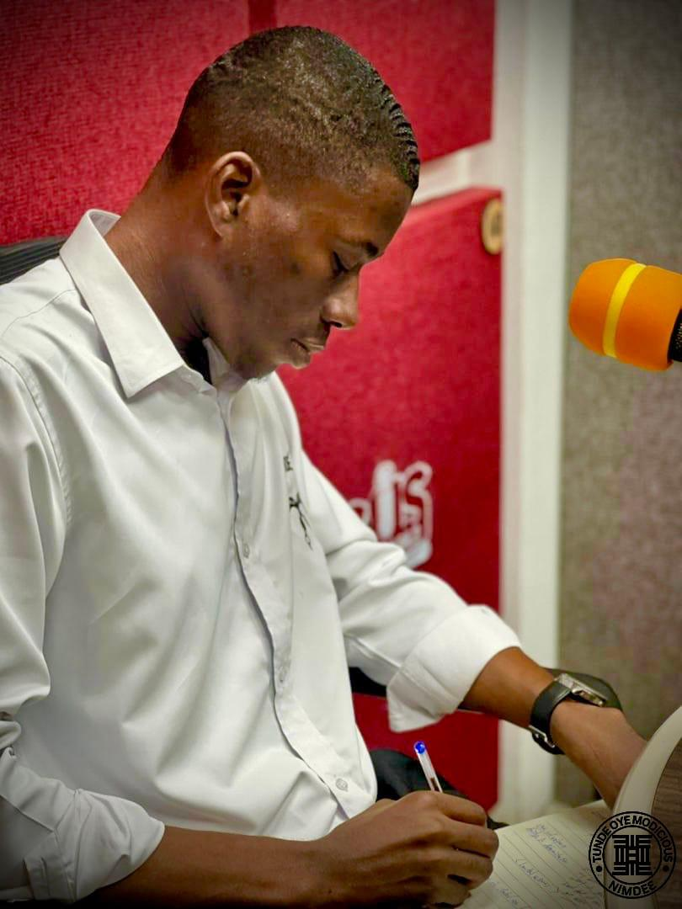

TUNDE OYE
MODICIOUS
Tunde Oye Modicious is a Political Science student at the Kwame Nkrumah University of Science and Technology (KNUST) and one of the most dynamic young leaders the university has produced in recent years.
Currently serving as the Vice President of Africa Hall JCRC, Tunde has spent his time at KNUST not merely as a student, but as a servant-leader dedicated to improving the lives of those around him. He has navigated campus governance firsthand — and he knows what works, and what urgently needs to change.
"I hold the assertion that leadership has always been a selfless but not a selfish gain." — Tunde Oye Modicious
His campaign is grounded in GODFIDENCE — a personal blend of divine faith and confident action — the belief that authentic leadership flows from spiritual grounding, deep conviction, and shared responsibility. He does not campaign above students; he campaigns with them.
Inspired by Newton: "If I could see further, it is by standing on the shoulders of giants." For Tunde, every KNUST student is a giant.